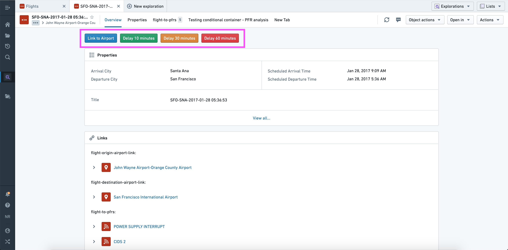
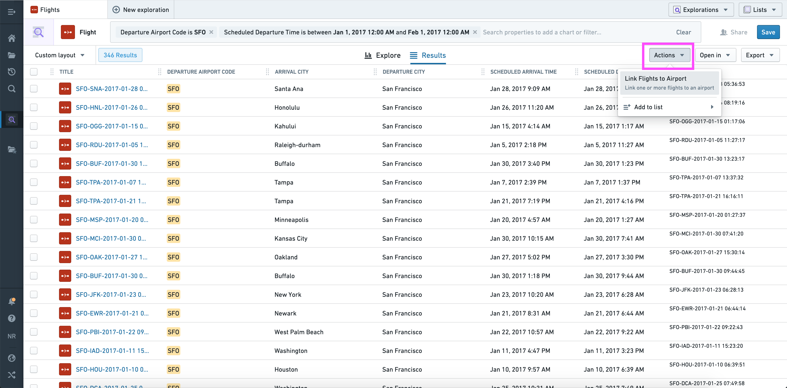
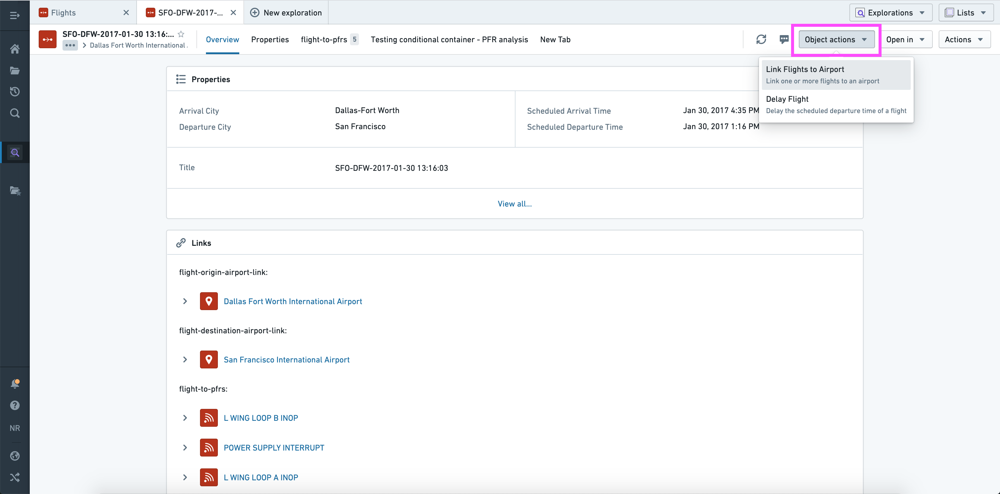
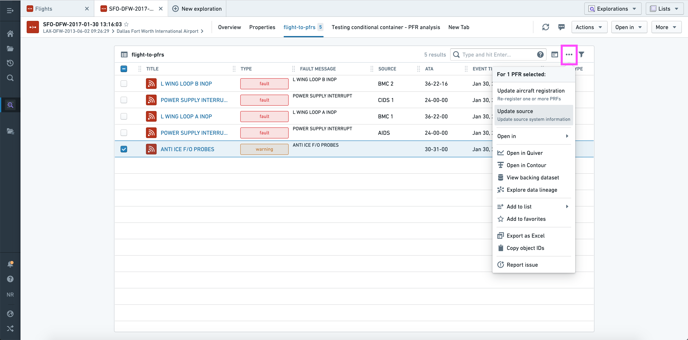
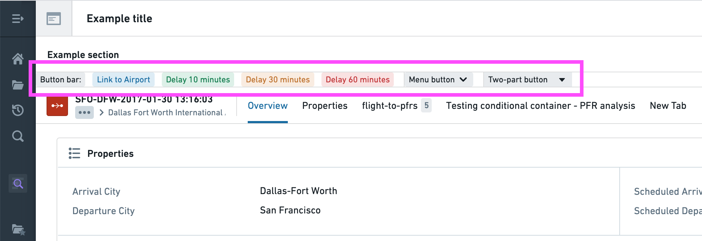

Action types can be seamlessly integrated across applications in Foundry. Read on to learn how to configure and apply an action from Object Explorer and Workshop.
In the examples below, we use the term single action type to refer to an action type using an object reference parameter, and bulk action type to refer to an action using an object reference list parameter.
Actions can be added to an Object View using the Actions section.

When configuring the Actions section you have the option to:
As shown above, you can therefore use this section to offer multiple structured versions of the same generic action ("Delay 10 minutes", "Delay 30 minutes", etc.).
Actions will automatically be shown in three places across Object Explorer:

Using the current set of objects, this dropdown is automatically populated with applicable bulk actions.

Using the current object, this dropdown menu is automatically populated with applicable single and bulk action types.

Using the selected object(s), this dropdown is automatically populated with applicable single and/or bulk action types.
:::callout In "bulk" contexts (where multiple objects are shown in a list view), only actions that accept object list parameters of the correct type will be shown. :::
In Workshop, Actions can be configured and applied using the Button group widget.

This widget has the same configuration options as the Actions section in an Object View, with a few notable extensions:
And one difference:
Read more about Actions in Workshop, or read the full reference for the Button Group widget to learn about all available configuration options.